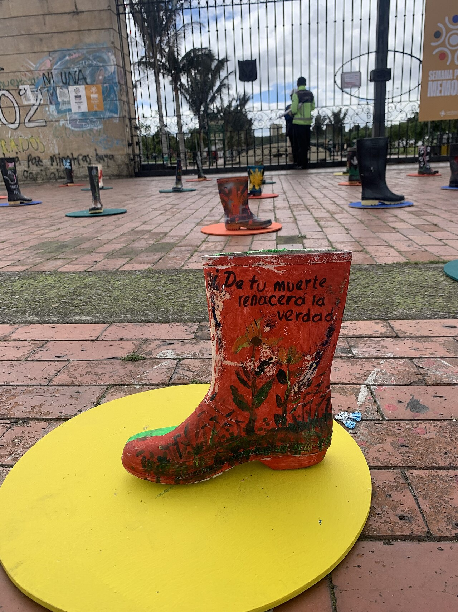
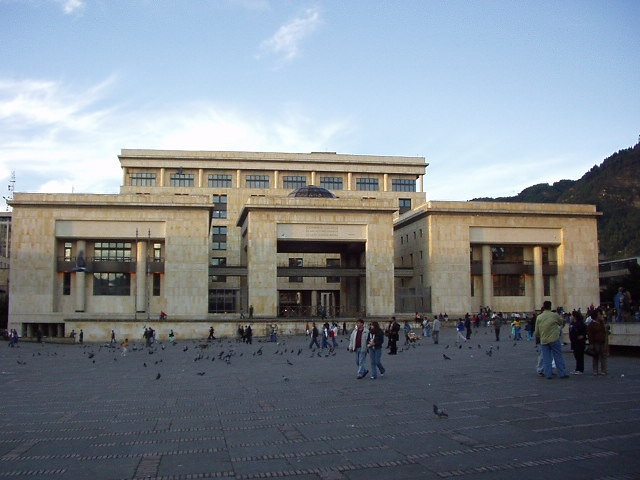
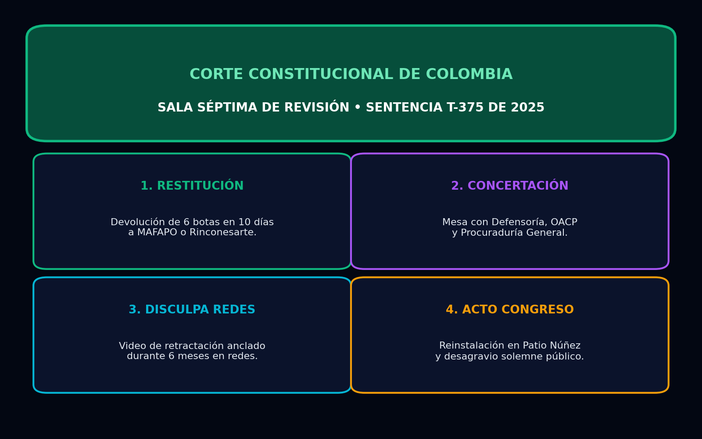
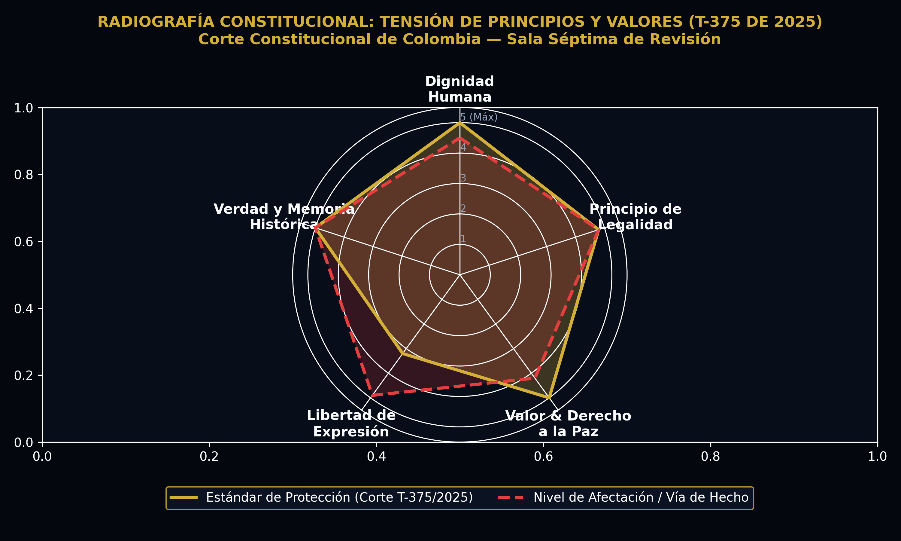

Prohibición de cosificación y respeto al dolor ajeno. El duelo público de MAFAPO es un derecho inalienable.
Principio de legalidad (Arts. 6 y 121 C.P.). La investidura congresal no ampara vías de hecho ni violencia simbólica.
Las expresiones artísticas de las víctimas como vehículos legítimos de verdad extrajudicial en justicia transicional.
La Asociación de Madres de Falsos Positivos (MAFAPO) y la Fundación Rinconesarte instalaron decenas de botas intervenidas artísticamente en memoria de las 6.402 víctimas de ejecuciones extrajudiciales (Auto 033/2021 de la JEP).

Muestra Artística MAFAPO en el Capitolio
Botas intervenidas en homenaje a las 6.402 víctimas de ejecuciones extrajudiciales.
Sustracción forzosa de 6 botas y desecho en vertedero
El congresista retiró y arrojó las obras al basurero, publicando videos estigmatizantes en redes.
MAFAPO & Rinconesarte invocan protección
Amparo por vulneración a dignidad humana, memoria histórica y no discriminación.
Juzgados niegan amparo por inmunidad
Argumentaron erróneamente que las vías de hecho estaban cubiertas por fuero congresal.
Selección e insistencia para fallo de fondo
Sala de Selección No. 1 asume el expediente bajo ponencia de la M.P. Paola Meneses.
Revocatoria total & Amparo a la memoria
La Corte fija doctrina: el arte memorial es verdad extrajudicial inviolable ante el poder.
Órdenes de restitución, disculpa y desagravio
Devolución de botas (10 d), disculpa en redes (6 m), mesa de diálogo y desagravio formal.
El Representante retiró por la fuerza 6 botas de caucho de las víctimas, las metió en bolsas negras de basura y las arrojó al vertedero.
Grabó y transmitió el acto en redes sociales afirmando que las botas «pertenecen al basurero», acusando a las víctimas de cobrar dinero ilícito.
La dignidad humana es norma fundante y derecho subjetivo. Arrojar las botas memoriales al basurero violó la prohibición constitucional de cosificación del dolor.
Tratar el recuerdo fúnebre como basura degrada a la propia persona a la condición de desecho material descartable.
El sufrimiento filial de las víctimas goza de protección constitucional absoluta frente a burlas o estigmatizaciones.
La memoria activa es la prolongación moral de la dignidad de las víctimas; silenciarla es cometer una segunda muerte simbólica.
Los servidores públicos solo pueden hacer lo que la Constitución y la ley les autoriza expresamente. La investidura congresal no concede patente de corso para ejercer vías de hecho.

Sala Séptima de Revisión de Tutelas
Reiteró que la inviolabilidad parlamentaria (Art. 185 C.P.) solo protege opiniones y votos en debate legislativo, jamás actos materiales de despojo ni agresiones a ciudadanos.
Los funcionarios tienen un deber cualificado de veracidad y neutralidad. Utilizar redes sociales masivas para denigrar a víctimas vulnera el debido proceso y la ética estatal.
La paz en Colombia no es solo ausencia de disparos; es paz positiva basada en verdad y reconciliación. La Corte declara que las expresiones artísticas son verdad extrajudicial.
No requiere armas de fuego: descalificar, estigmatizar y tirar el recuerdo a la basura perpetúa la violencia cultural contra las víctimas.
Las botas intervenidas de MAFAPO son testimonio legítimo de la sociedad civil. Destruirlas atenta contra el derecho a la verdad y la no repetición.
La libertad de expresión no es absoluta. La Corte distingue con precisión quirúrgica el debate democrático vigoroso frente al hostigamiento revictimizante.
Cuestionar funcionarios, partidos o políticas de Estado. Admite lenguaje cáustico e impopular.
Burlarse del dolor, deslegitimar a madres de víctimas de ejecuciones extrajudiciales e imputar delitos sin pruebas. Prohibido por la Constitución.
La Corte revocó las decisiones de instancia y concedió el amparo constitucional pleno con 4 mandatos restaurativos concretos:

Entregar las 6 botas sustraídas a MAFAPO o a la Fundación Rinconesarte Internacional.
Con Defensoría, OACP y Procuraduría para concertar la restitución si no se recuperan los ejemplares.
Video de retractación reconociendo la legitimidad de MAFAPO, anclado durante 6 meses en sus redes.
Reinstalación de la muestra en el Patio Rafael Núñez con disculpas presenciales transmitidas por canales institucionales.

Ponderación dogmática entre Art. 1 (Dignidad), Art. 6 (Legalidad), Art. 22 (Paz) y Art. 185 (Límites).
1.83 MB • Normas APA 7.ª edición • 9 Capítulos • Tablas y Anexos Fotográficos
• Corte Constitucional. (2025). Sentencia T-375 de 2025 (M.P. Paola Andrea Meneses Mosquera). Caso MAFAPO vs. Polo Polo.
• Corte Constitucional. (2002). Sentencia T-881 de 2002 (M.P. Eduardo Montealegre). Dignidad humana.
• Corte Constitucional. (1995). Sentencia C-225 de 1995 (M.P. Alejandro Martínez Caballero). Protocolo II y Paz.
• JEP. (2021). Auto 033 de 2021. Macrocaso 03: 6.402 ejecuciones extrajudiciales en Colombia.
• Galtung, J. (1990). Cultural violence. Journal of Peace Research, 27(3), 291-305.
• Bourdieu, P. (2000). La dominación masculina y la violencia simbólica. Editorial Anagrama.